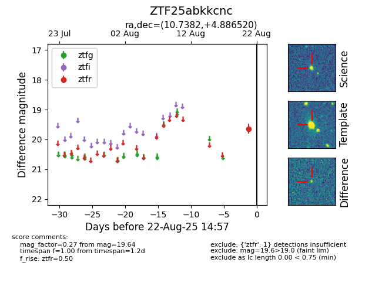

Target ZTF25abkkcnc at 2025-08-22 14:57, see:
FINK: fink-portal.org/ZTF25abkkcnc
Lasair: lasair-ztf.lsst.ac.uk/objects/ZTF25abkkcnc
ALeRCE: alerce.online/object/ZTF25abkkcnc
alt names
ZTF25abkkcnc (ztf,alerce)
coordinates:
equatorial (ra, dec) = (10.7382,+4.88652)
galactic (l, b) = (118.9502,-57.91961)
photometry
last ztfr=19.64
1 ztfr detections
